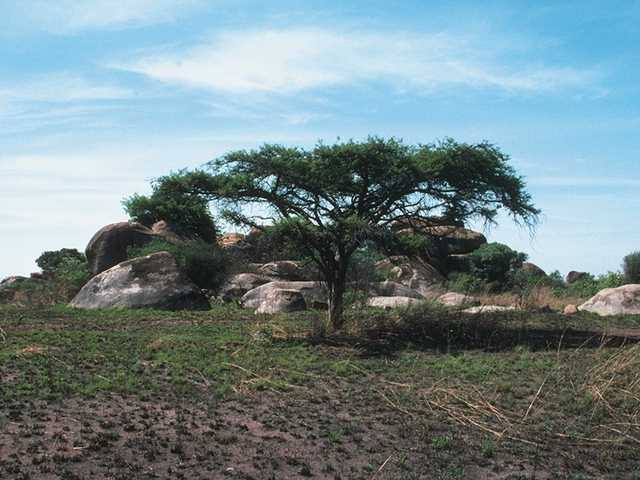
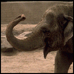
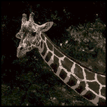
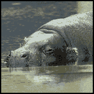
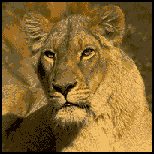

In central Africa, many kinds of animals live on large, grass-covered plains. Animals that eat plants are herbivores. Some African herbivores are elephants, giraffes and hippos. Animals that eat only meat are carnivores. Lions are carnivores that live in Africa.

The most amazing feature on an elephant is its long nose, called a trunk. The elephant uses its trunk to eat and drink. An elephant eats grass, leaves, twigs and fruits by wrapping its trunk around the food and bringing it up to its mouth. It drinks by sucking water up into its trunk, putting the trunk into its mouth, and then spraying the water down its throat.

Giraffes are the tallest land animals living in the world today. Because giraffes need to eat a lot of food in order to live, they spend about half of their lives eating. Giraffes eat leaves and twigs by curling their strong tongues around the food to pull it free.

The word "hippo" is short for "hippopotamus," which means "horse of the river." Although hippos are very big, they do not eat as much food as you might think. They spend a few hours each day eating different kinds of grasses on land. To protect themselves from predators, hippos spend most of their time in water.

Lions spend most of their time resting and sleeping. Lions sleep during the day when it is very hot. When they hunt, lions must sneak up on prey in order to catch it. Female lions do the hunting for their prides (family groups).